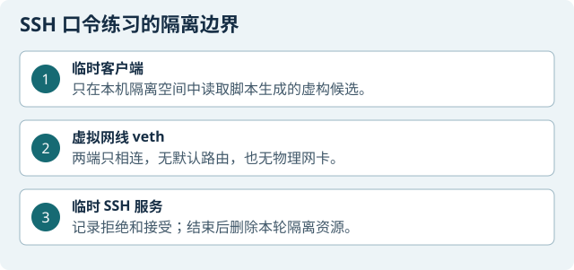

目标与边界
本章用虚构候选和一台由实验脚本临时建立的本机 OpenSSH 服务，观察 SSH 认证拒绝、主机密钥核验、有限尝试和证据留存。SSH 服务与客户端只在 M 攻击机内部一对临时 veth 和两个 Linux network namespace 中通信；没有默认路由、物理网卡或外部靶机。
范围限制：本章只针对脚本自动创建的本机隔离靶场。不要把命令改成真实地址、主机、账号或字典；不要使用真实凭据、个人信息、任意靶机或远程服务。
准备与检查
在配套 M 虚拟机中做。实验脚本临时生成 18 项虚构候选，并用 OpenSSH、Paramiko 和 tcpdump 在 M 的两个隔离网络空间内运行。开机后网卡保持断开。
操作步骤
确认这是隔离练习

操作示意｜示意图没有真实主机、账号或口令。 M 攻击机 在本章专用终端确认当前操作的是实验十准备目录，不连接课程网、校园网或互联网靶机。若不能确认靶场仍是脚本创建的临时环境，停在这里。
检查源码与依赖
M 普通终端 核对脚本和 SSH 工具
cd ~/lab10_prep test -f lab10_bruteforce.py test -f 自建靶场/run_isolated_randomized.sh python3 --version python3 -c 'import paramiko; print(paramiko.__version__)' /usr/sbin/sshd -V 2>&1 | head -n 1离线生成虚构候选（可选）
Windows PowerShell 若要重看生成规则，只使用下例中的虚构字段；不要填真实姓名、学号或口令。输出文件应留在练习目录并按敏感练习数据处理。
python .\lab10_bruteforce.py generate ` --surname li --given-initials xy --student-number 000000 ` --output .\fictional-candidates.txt这是离线文本生成，没有 SSH 连接。本站不展示候选文本。
给本轮建立结果目录
M 普通终端 每轮用一个新目录，便于查看清理记录
RUN=$(mktemp -d "$HOME/lab10-run-XXXXXX") printf '%s\n' "$RUN"运行隔离靶场
M 同一个终端 输入自己设置的 Ubuntu 密码。脚本会生成本轮虚构候选、启动临时 SSH 服务并校验临时主机密钥
sudo bash ~/lab10_prep/自建靶场/run_isolated_randomized.sh \ --evidence "$RUN/experiment10-evidence.tar.gz"客户端只连接脚本自己创建的隔离 SSH 服务。
观察启动门槛和失败分支
M 临时实验终端 脚本若提示 namespace 中出现额外网卡、默认路由、SSH 服务未就绪、主机密钥不符或参数验证失败，不要继续试连接。保存错误并让本轮脚本按退出流程清理；不能通过重试其他地址排障。
在限定预算内观察认证结果
M 临时实验终端 客户端仅对脚本在本轮 namespace 中创建的 SSH 服务尝试最多 18 个虚构候选，失败之间至少间隔 1 秒，命中后停止。观察认证拒绝与成功提示，不打开口令内容，也不把候选值抄进笔记。
对照脱敏汇总和抓包
M 普通终端 只检查脚本生成的
run-summary.txt、限定流量 PCAP 和 SHA256 清单。确认摘要标明loopback-veth-netns-only、无默认路由、无物理接口、18 项虚构候选和实际停止原因。不要将 PCAP 当成明文口令证据。核对脚本是否清理本轮资源
M root 终端 等脚本正常返回后确认本轮 namespace、临时 sshd、监听端口和临时账号文件均已移除。若脚本以非零状态退出，先保留状态回执，再只核对本脚本创建的资源；不要清理同名的其他网络空间或进程。
查看练习输出
从摘要中读取实际尝试数、停止原因、服务端拒绝/接受计数和抓包统计；这些数字只描述本轮脚本创建的隔离靶场，不表示远程账号或服务已测试。
归档并结束
M / Windows 只复制脱敏摘要、受限 PCAP 与哈希清单；检查压缩包里没有字典、口令、哈希、临时 host key 或原始认证日志。核验文件可打开、哈希一致后结束本章，不继续对其他目标试探。
检查与证据
合格记录应能说明练习范围是脚本创建的两个 network namespace 与一对 veth，包含客户端/服务端有无默认路由、有无物理接口、候选上限、认证尝试数、停止原因、退出码、脱敏摘要和 PCAP 哈希。成功只说明本地隔离链路与客户端互操作工作；它不能证明真实密码安全或任何远程账户已测试。
如果服务端限制认证尝试或退出后发现子进程残留，保存原始错误与清理回执，先按本轮资源标识核对，再处理脚本创建的资源；不要放宽范围或改用非隔离目标重试。
故障排查
- Paramiko 无法导入。确认打开的是配套 M。先复查准备步骤中的 Python 导入命令。
- 未知或不匹配的 host key：立即停止，不选择“接受”或关闭校验。
- 额外网卡、默认路由或 namespace 验证失败：不要开始 SSH 尝试；保留回执，按唯一的本轮资源标识检查清理。
- 脚本非零退出或残留 sshd：不要反复运行；先确认本轮进程与临时资源，再保留原始退出码和状态。
收尾
以清理回执、端口不再监听、临时 namespace 已删除和摘要哈希为结束检查。不要保存或发布候选字典、口令、哈希、私钥或包含这些内容的原始终端记录。整个流程应始终留在本机隔离靶场。